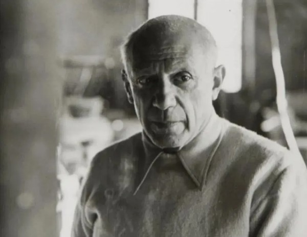

利·卡蒂埃-布列松（Henri Cartier-Bresson）提出的“决定性瞬间”（The Decisive Moment）是现代摄影史上最具影响力的美学理论之一，它不仅是一种拍摄技巧，更是一种观察世界和表达思想的方式。
理论核心：形式与内容的完美统一
“决定性瞬间”理论的核心，是指在事件发展的过程中，存在一个转瞬即逝的特定时刻。在这一刻，场景中的所有视觉元素（人、物、光影、构图）会恰好排列成最具意义的几何形态，同时这个形态又能最完美地揭示事件的本质和内涵。
布列松在1952年出版的摄影集《决定性瞬间》（法文原名《抓拍的影像》）中对此进行了阐述，他认为摄影就是“在几分之一秒内，同时记录一个事件的内涵及其表现形式”。这不仅仅是抓取一个动作的高潮，更是意义、构图与时机三者在瞬间的完美结合。
实践方法：抓拍与直觉
为了实现“决定性瞬间”，布列松发展出了一套独特的实践方法，其核心是抓拍。
对摆拍：他坚信现实本身就能讲述最好的故事，因此坚决反对任何形式的人工安排或导演。他认为经过加工的照片没有意义。
“隐形”的观察者：为了捕捉最自然、最真实的瞬间，布列松力求让自己“隐形”。他常常用黑胶带包裹相机的金属部件以防反光，并依靠直觉和敏捷的反应，在不干扰被摄对象的情况下完成拍摄。
极简的装备：他几乎只使用一台轻便的35毫米徕卡（Leica）相机和一支50毫米标准镜头。这种极简的配置让他行动自由，能够快速响应，将相机视为“眼睛的延伸”。
构图与光线：他坚持只使用现场光，对使用闪光灯，并且从不裁剪自己的照片。他认为构图应该在取景器中一次性完成，这要求摄影师具备极高的预见性和严谨的构图能力。
哲学内涵：一种“观世之道”
“决定性瞬间”远不止是一种摄影技巧，它更是一种深刻的哲学观和世界观。
赋予世界意义：对布列松而言，摄影是记录他所见所感的“素描本”，是一种直觉和发的工具。通过抓取决定性瞬间，摄影师将自己的情感、思考和理解融入到画面中，从而赋予客观世界以主观的意义。
人文关怀：他认为，无论一幅照片技术多么完美，如果它远离了对人类的爱、理解和命运的认知，不算成功。他的作品始终关注普通人，从平凡的日常中发现美与诗意，体现了深刻的人文关怀。
瞬间即永恒：这一理论的本质，是通过摄影师敏锐的眼睛和果断的决策，将流动现实中稍纵即逝的完美一刻凝固下来，使其成为永恒。
总而言之，决定性瞬间”理论要求摄影师同时具备画家的构图眼光、猎人的耐心等待和哲学家的深刻思考，在电光石火的一刹那，完成对现实世界的诗意提炼。
